UNGA-DISEC
Agenda: Preventing the Proliferation of arms to non state actors
With the emergence of new non-state threats to world peace, we revisit an issue that has returned to prominence. With the ISIS threat looming over the world, we address one massive part of the issue of combating non state actors -the proliferation of small arms and light weapons.
Country Matrix
UNGA-SOCHUM
Agenda 1: The issue of Islamophobia
Agenda 2: Providing for freedom of speech and addressing press censorship.
With a refugee crisis that gives birth to more reports of discrimination and illegal immigrants being the talk of the town in certain countries, the idea of islamophobia has reached its highest since 9/11. This committee aims to discuss the strategies that can be adopted in preventing the spread of islamophobia, while keeping world safety in mind.
Country Matrix

UNHRC
Agenda: Protecting victims of human trafficking in conflict and post-conflict situations.
Worldwide, 21 million people are victims of human trafficking. In areas of conflict, people are particularly vulnerable to exploitation – erosion of the rule of law and government institutions creates a state of impunity where criminals act without fear of arrest and evade prosecution. The international community and individual countries must recognize
labor and sex trafficking as a common occurrence during conflict and include
anti-trafficking strategies in humanitarian responses.
Country Matrix
Commission on Narcotic Drugs
Agenda: Enhancing international cooperation to strengthen efforts in West Africa to counter illicit drug trafficking
The Commission on Narcotic Drugs (CND) was established by the Economic and Social Council (ECOSOC) resolution 9(I) in 1946, to assist the ECOSOC in supervising the application of the international drug control treaties. In 1991, the General Assembly (GA) further expanded the mandates of the CND to enable it to function as the governing body of the UNODC, and to approve the budget of the Fund of the United Nations International Drug Control Programme.The Commission has important functions under the drug control treaties in force today; most notably, it can amend the Schedules of controlled substances under the Single Convention on Narcotic Drugs and the Convention on Psychotropic Substances. This simulation of the committee aims to discuss the trafficking of drugs and other illicit substances around the world with special reference to West Africa. It has been suggested that Al-Qaeda in the Islamic Maghreb (AQIM) and Hezbollah have earned tens of millions of dollars through such illicit dealings, and then used these funds to finance terrorist operations in Africa and elsewhere.
Country Matrix
European Council
Agenda: Discussing the consequences of a possible BREXIT and its implications on a global scale.
Delegates, the European Union is going through its most transformational shifts since its inception. With the exit of the United Kingdom (“Brexit”) having the potential to upset the economic stability of the region and the refugee crisis threatening to create differences among otherwise peaceful European countries, it is the duty of the European Union to ensure smooth transition and order.
Country Matrix

Indo-Pak
Agenda: Mutual cooperation to eliminate terror and enhancing confidence building measures
The stage is set as two old rivals meet to deliberate over worrying recent events that have come to light. Since their Independence in 1947, these two countries have been at loggerheads for the better part of their existence. History is proof that India won all the wars it had with Pakistan but several experts remark that although India won the war, it actually lost a battle. Indo-Pak tensions have affected the economies of both these nations and the conflicts have affected an enormous number of people. Is war the only option if things escalate? Or are there other options that can be used to suffocate the other in a different manner? Take part in this continuous crisis committee to experience real time scenarios that leaders face in crucial moments. Make real time decisions to lead your country to greater heights, or else have the blood of the hundreds of thousands that may perish while keeping in mind that the decision you take will decide the direction in which the committee moves forward.
Country Matrix
Crisis Committee
To be announced 25 days before the conference.
There are 25 slots available in this committee
Welcome to the Crisis Committee, where you shall find scintillating debates, powerful directives and much backroom lobbying. Can you keep up with the breakneck pace and change the annals of history? Do remember to maintain the balance of power, lest you find yourself with wars on all sides.
Country Matrix
Designed and Developed by:
Aditya Malhotra
Sebastin Santy
Divij Sinha